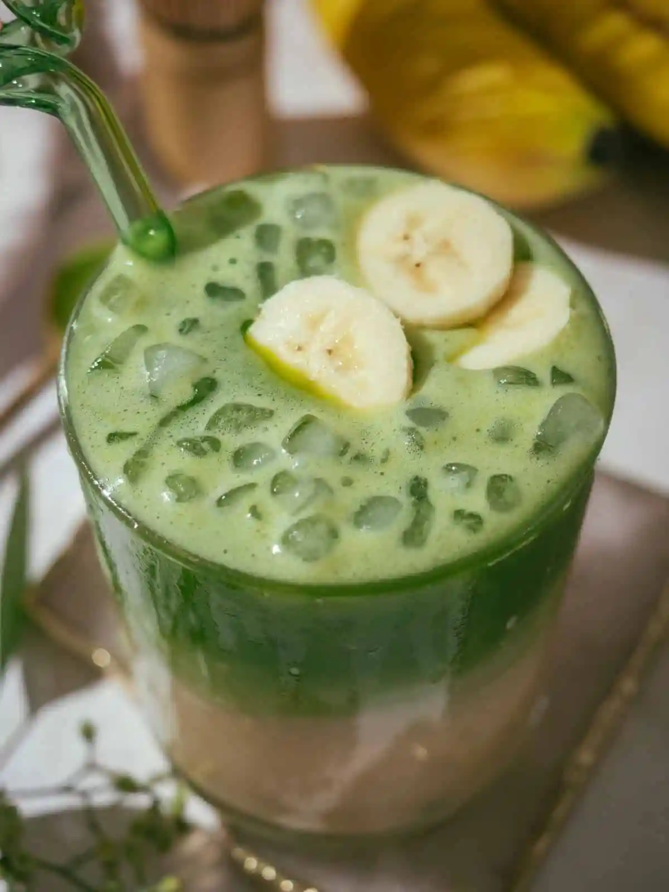

This Banana Milk Matcha Latte is a creamy, naturally sweet matcha drink made with homemade banana milk. The combination of earthy Japanese matcha and ripe bananas creates a smooth, energizing drink that's perfect for breakfast or an afternoon pick-me-up.

Yoko's Kitchen — Banana Matcha Latte Recipe, January 2024